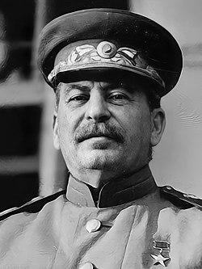
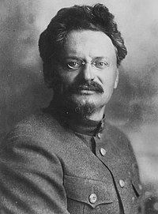
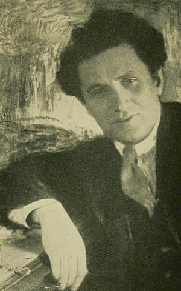
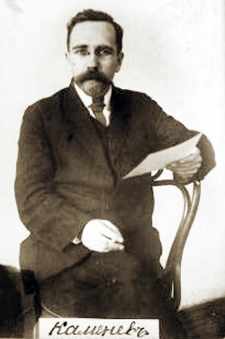
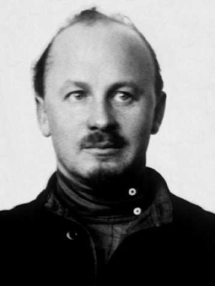
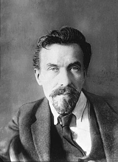

Радянський Союз, офіційна назва — Союз Радянських Соціалістичних Республік (СРСР) — федеративна соціалістична держава в Північній Євразії, яка існувала з 1922 по 1991 рік. Формально — союз декількох національних радянських республік; на практиці — однопартійна диктатура з високим ступенем централізації керівництва та плановою економікою, якою керувала Комуністична партія. Столицею держави була Москва в її найбільшій республіці — Російській РФСР. Іншими великими міськими центрами були Ленінград, Київ, Мінськ, Ташкент, Алмати та Новосибірськ. Після розпаду Британської колоніальної імперії СРСР став найбільшою за площею країною світу, що простягалась понад 10 000 кілометрів зі сходу на захід, перетинаючи 11 часових поясів і понад 7200 кілометрів з півночі на південь. Її територія включала більшу частину Східної Європи, а також частину Північної Європи та всю Північну та Середню Азію. Країна мала п'ять кліматичних зон, таких як тундра, тайга, степи, пустелі та гори. До народів, що проживали на його території, вживалася спільна назва «радянський народ».
Йосип Віссаріонович Сталін (18 грудня 1878, Горі, Російська імперія — 5 березня 1953, Москва, СРСР) — радянський військовий та політичний діяч грузинського походження. Перебуваючи на постах генерального секретаря Комуністичної партії Радянського Союзу (1922—1953) та голови уряду (1941—1953), встановив в СРСР однопартійну тоталітарну систему та став фактично одноосібним диктатором. Створені за його правління політична система й ідеологія дістали назву сталінізм.
Народився в бідній сім'ї в місті Горі, навчався в Тбіліській духовній семінарії до 1898. В молодості приєднався до марксистської РСДРП та став послідовником Леніна. Редагував більшовицьку газету Правда, брав участь у розбоях, викраденні та вимаганні на користь партії, за що його неодноразово арештовували та відправляли в заслання. 1912 року обраний до складу ЦК. Після більшовицького перевороту став членом Політбюро, а згодом зайняв пости наркома у справах національностей й державного контролю. Упродовж громадянської війни в Росії виступав у ролі спеціального уповноваженого партії на важливих ділянках фронту. 1922 року Йосип Сталін посів пост генерального секретаря ВКП(б), а після смерті Леніна сконцентрував владу у своїх руках, розмістив ключових прибічників на основні посади та вигнав потенційних суперників й колишніх союзників.
До середини 1930-х років Сталін сконцентрував у своїх руках всю повноту державної влади і фактично став одноосібним вождем народів радянського союзу. Інші більшовицькі лідери — Троцький, Зінов'єв, Каменєв, Бухарін, Риков та інші, що входили до антисталінської опозиції, були поетапно виключені з владної комуністичної партії, а потім фізично знищені як «вороги народу». У другій половині 1930-х років у країні був встановлений режим жорстокого терору, який досяг апогею в 1937—1938 роках. Пошук і знищення «ворогів народу» зачепило не лише найвищі партійні органи і керівництво армії, але й широкі кола радянського суспільства. Мільйони громадян країни за надуманими, недоведеними звинуваченнями у шпигунстві, шкідництві, саботажі були репресовані, заслані до концтаборів або страчені у слідчих органах НКВД чи в'язницях.
1. Лев Давидович Троцький (Лейба Бронштейн; 26 жовтня 1879, Янівка, Єлисаветградський повіт, Херсонська губернія, Російська імперія (нині село Береславка, Бобринецький район, Кіровоградська область, Україна) — 21 серпня 1940, Койоакан, Мехіко, Мексика) — російський революціонер, активний учасник російського та міжнародгого соціального та комуністичного руху, радянський державний, партійний та військово-політичний діяч, комуністичний діяч, ідеолог троцькізму — однієї з течій марксизму. Двічі засланець при імперському режимі, позбавлений всіх громадянських прав у 1905 році. Один із організаторів Жовтневого перевороту 1917 року, творців Червоної армії, засновників та ідеологів Комінтерну, член його Виконкому. У першому радянському уряді — нарком з іноземних справ, потім в 1918–1925 — нарком з військових і морських справ та голова Реввійськради РРФСР, потім СРСР. З 1923 р — лідер внутрішньопартійної лівої опозиції. Член Політбюро ВКП(б) в 1919—1926 роках. У 1927 році знятий з усіх посад, відправлений на заслання, 1929 року висланий за межі СРСР. У 1932 році позбавлений радянського громадянства. Після висилки з СРСР — творець і головний теоретик Четвертого інтернаціоналу (1938). Автор праць з історії революційного руху в Росії, творець капітальних історичних праць з революції 1917 року, літературно-критичних статей та автобіографії спогадів «Моє життя» (Берлін, 1930). Двічі одружений, без розірвання першого шлюбу.
2. Григорій Овсійович Зінов'єв народився у Єлисаветграді (нині Кропивницький, з 1924 по 1934 рік місто носило його ім'я — Зінов'євськ) у єврейській родині власника молочної ферми Аарона Радомисльського. Він отримав домашню освіту, що дозволила йому ще у підлітковому віці підпрацьовувати репетитором. Сучасник Зінов'єва та помічник Сталіна Борис Бажанов згадував його як «людину розумну та культурну». Він вивчав філософію, літературу, історію, цікавився політикою. Ще з молодості тісно спілкувався з представниками революційних рухів, а уже у вісімнадцятирічному віці у 1901 році почав свою політичну кар'єру, вступивши до лав РСДРП та взяв собі партійний псевдонім «Григорій».
3. Лев Борисович Каменєв народився у Москві. Батько його у той час працював машиністом на Московсько-Курській залізниці. Батько закінчив Санкт-Петербурзький Технологічний інститут, а мати — Вищі жіночі Бестужевські курси. У зв'язку зі зміною місця роботи батька родина переїхала до фабричного селища невеликого гвіздкоробного заводу поблизу станції Ландворове у Віленській губернії. Там і пройшло дитинство Л. Каменєва. Навчався у 2-й Віленській гімназії.
У зв'язку з переїздом родини закінчував 2-гу гімназію у Тифлісі (1901). В останніх класах гімназії вже цікавився марксистською літературою і нелегально отримував її з марксистських гуртків. 1901 року вступив на юридичний факультет Московського університету. Учасник делегації Радянської Росії на мирних переговорах із Центральними державами в Бересті. В 1936 засуджений за справою «Троцкістсько-зинов'євського центру» і розстріляний. Посмертно зреабілітований у 1988 році.
4. Микола Іванович Бухарін народився в родині шкільного вчителя. З 1893 жив в Кишиневі, де батько працював податковим інспектором. Закінчив початкове міське училище та 1-у Московську гімназію. З 1903 по 1910 рік працював репетитором у Москві. Після закінчення гімназії навчався на економічному відділенні юридичного факультету Московського університету (у 1911 виключений за участь в революційній діяльності). Під час революції 1905-1907 спільно зі своїм найкращим другом Іллею Еренбургом брав активну участь в студентських демонстраціях, організованих студентами Московського університету. У серпні 1906 року вступив до РСДРП(б), прилучившись до більшовиків. У віці 19 років разом з Григорієм Сокольниковим організував в Москві молодіжну конференцію 1907, яка згодом вважалася попередницею комсомолу. У 1908—1910 — член Московського комітету РСДРП, вів роботу в профспілках. В цей час зблизився з В. М. Смирновим і познайомився зі своєю майбутньою дружиною Н. М. Лукіною. У червні 1911 арештований і засланий на 3 роки в Онегу (Архангельська губернія), в тому ж році втік із заслання і нелегально виїхав до Ганновера, потім в Австро-Угорщину. За кордоном Бухарін познайомився з Леніним, з яким згодом підтримував дружні взаємини. У Відні він також зустрівся із Сталіним, якому допомагав в роботі з з німецькомовними джерелами при підготовці статті «Марксизм і національне питання». У еміграції продовжував займатися самоосвітою, вивчаючи твори як засновників марксизму і соціалістів-утопістов, так і своїх сучасників. Особливо сильний вплив на формування поглядів Бухаріна зробив А. А. Богданов.
5. Олексій Іванович Риков народився в родині купця, переселенця зі слободи Кукарка Яранського повіту Вятської губернії Івана Ілліча Рикова. Інша версія — в родині селянина[5]. За деякими даними Олексій Риков народився в слободі Кукарка Яранського повіту Вятської губернії, а через два тижня після народження разом із батьками переїхав до Саратова. З 26 жовтня (8 листопада за новим стилем) 1917 року — народний комісар внутрішніх справ у першому радянському уряді Росії. Працював на цій посаді до 4 (17 листопада) (9 днів). 10 листопада 1917 року підписав постанову про створення міліції (ця дата досі відзначається в Росії як День міліції). Як прихильник створення коаліційного уряду за участю всіх лівих сил, Риков 17 листопада 1917 вийшов зі складу РНК і ЦК. 29 листопада 1917 року відкликав свою заяву про вихід з ЦК РКП(б). З листопада 1917 року — на роботі у виконавчому комітеті Московської ради, займався питаннями постачання міста продовольством. Обраний депутатом Установчих зборів Російської республіки. З 15 лютого по квітень 1918 року — член колегії Народного комісаріату продовольства РРФСР. Одночасно з березня по квітень 1918 року — комісар продовольства Центрального промислового району, член Московської обласної Ради народних комісарів. 2 лютого 1924 — 19 грудня 1930 року — голова Ради народних комісарів СРСР. Одночасно, 2 лютому 1924 — 18 травня 1929 року — голова Ради народних комісарів РРФСР і з 16 січня 1926 по 19 грудня 1930 року — голова Ради праці та оборони СРСР. Після смерті Леніна активно підтримав Сталіна в боротьбі проти Троцького, а пізніше — проти Зинов'єва і Каменєва.